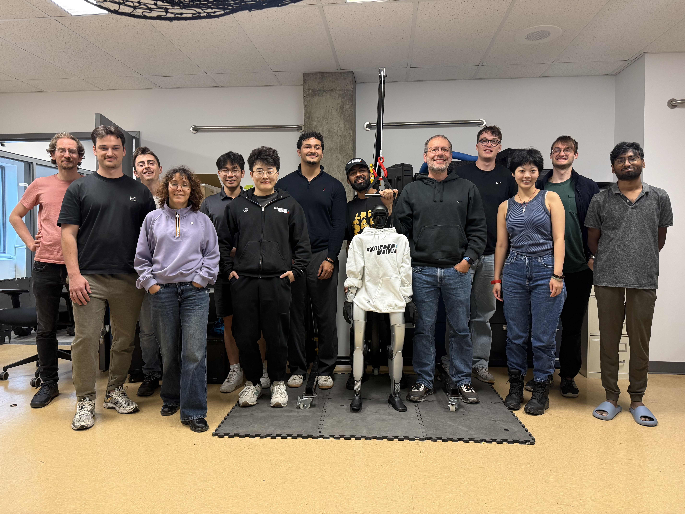

My Research Lab
Multi-robot Intelligent Systems Technology Lab · Polytechnique Montréal

“The MIST Lab pushes the boundaries of autonomous robotics, from swarms of drones to lunar rovers, to caves and planetary surfaces, operating where infrastructure ends.”
The Making Innovative Space Technology (MIST) Lab at Polytechnique Montréal works on robot autonomy, swarm intelligence, field robotics and software engineering for robotic systems. Directed by Giovanni Beltrame, with associate professors Jana Pavlasek and Pierre-Yves Lajoie, it brings together more than twenty researchers and students, has published over 100 papers, and releases its research as open-source software.
Enabling robots to perceive, reason and act in complex, GPS-denied environments with minimal human intervention.
Coordinating dozens of robots for collective intelligence that is decentralized, resilient and scalable beyond any single platform.
Deploying systems in real-world hostile conditions: lava fields, underground caves, arctic terrain and simulated planetary surfaces.
Building robust, reusable software architectures that make complex robot systems reliable and deployable at scale.
Lab Director · Full Professor · Swarm intelligence, autonomous field robots and space science.
Associate Professor · Uncertainty in robotics, probabilistic inference and planning.
Associate Professor · Spatial AI, collaborative SLAM and robot perception.
Supervised by Giovanni Beltrame and Jana Pavlasek · Associated with Mila – Quebec AI Institute
The lab takes robots into real-world and analogue environments, working with space agencies and research partners: